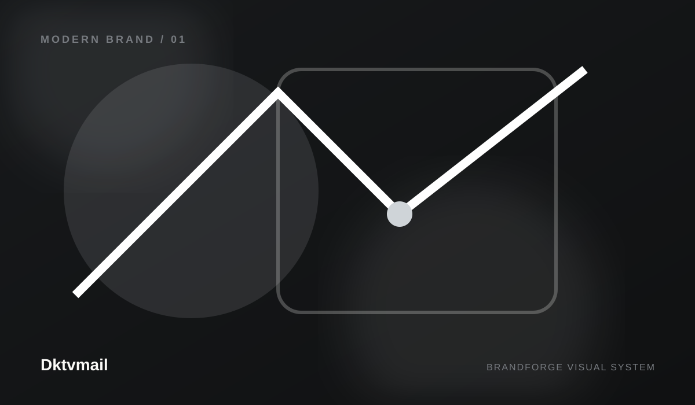
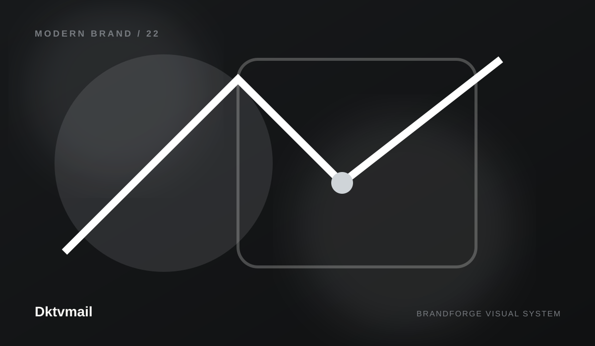
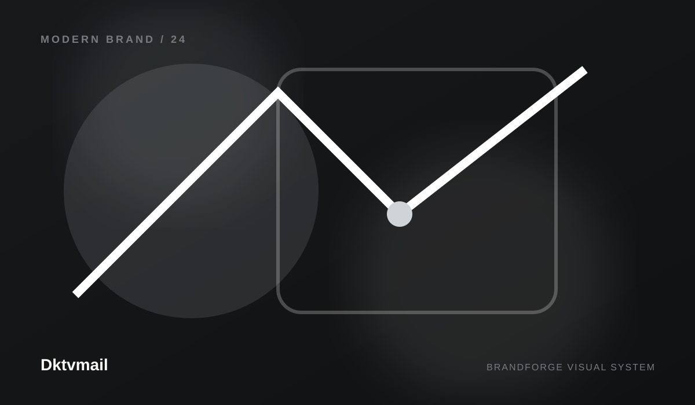
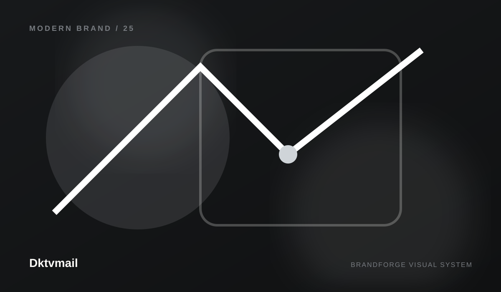
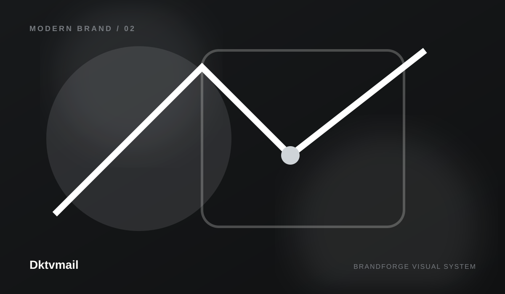
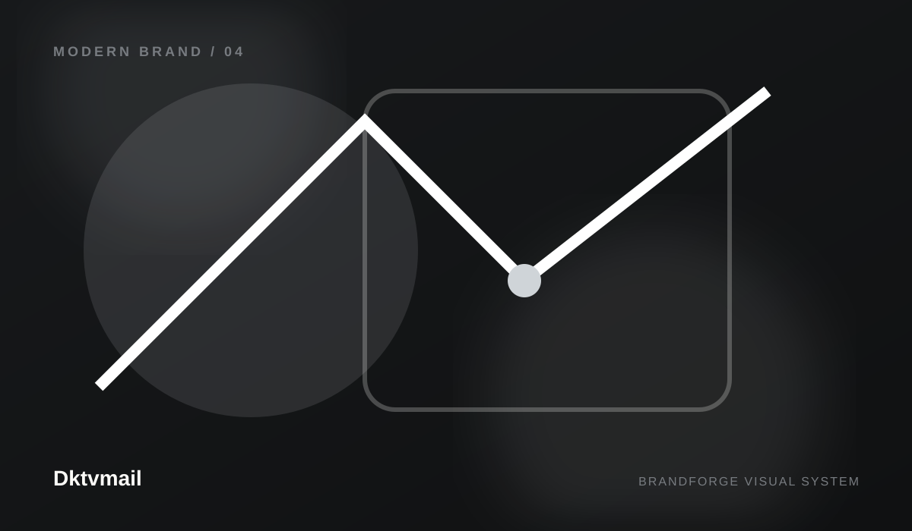

Discover the real need
Start with the real context before choosing a solution.
Modern Brand · 2026
A modern brand built around clear ideas, useful experiences, and long-term growth.

THE IDEA
Dktvmail is presented as a complete digital experience rather than a single landing page. Every screen shares one visual language, one content hierarchy, and one clear path through the brand.
Explore the brand direction ↗CAPABILITIES
Each capability receives its own detailed page, visual, supporting content, and clear relationship to the wider brand.

Solutions is treated as part of the complete Dktvmail experience — designed to clarify the system while keeping the experience clear, useful, and maintainable.
Explore capability ↗
Experience Design is treated as part of the complete Dktvmail experience — designed to shape the system while keeping the experience clear, useful, and maintainable.
Explore capability ↗Operations is treated as part of the complete Dktvmail experience — designed to clarify the system while keeping the experience clear, useful, and maintainable.
Explore capability ↗
Partnerships is treated as part of the complete Dktvmail experience — designed to organize the system while keeping the experience clear, useful, and maintainable.
Explore capability ↗
Resources is treated as part of the complete Dktvmail experience — designed to organize the system while keeping the experience clear, useful, and maintainable.
Explore capability ↗
DESIGN SYSTEM
The site uses local generated artwork, responsive layouts, strong typography, purposeful spacing, motion, editorial composition, and reusable components to avoid the look of a basic starter page.
APPROACH
Start with the real context before choosing a solution.
Translate the direction into a clear structure and visual system.
Build the pages, assets, interactions, and supporting content as one experience.
Review the details, remove friction, and create room for future growth.
BUILT FOR DEPTH
INSIGHTS
Editorial content gives the site depth without inventing customer stories, performance claims, or fake case studies.

Why consistent structure, language, visuals, and interaction patterns create a stronger digital identity.
Read article →
A practical approach to building a site that feels complete without becoming difficult to understand.
Read article →
How hierarchy, pacing, imagery, typography, and content work together across a full website.
Read article →The site is structured around the brand direction, core capabilities, process, resources, and contact paths inferred from the connected GitHub account.
BrandForge avoids inventing customers, certifications, addresses, prices, guarantees, or performance metrics. Those details should only be added when they are real.
Yes. The generated structure is modular, so new pages, services, products, resources, and integrations can be added without rebuilding the visual system.
